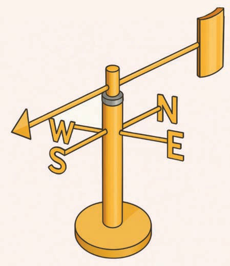

Measuring wind speed
Steps to measure wind speed using an anemometer:
(a)
Hold/place the anemometer in an open area where the wind can blow freely.
(b)
Observe the rotation of the cups, which is measured on a gauge and converted into wind speed.
(c)
Read the wind speed on the gauge connected to the anemometer.
(d)
Record the wind speed in units of metres per second, kilometres per hour, or miles per hour.
Wind vane
This is an instrument with an arrow on top that indicates the direction of the wind. The arrow is fixed on a rod. At the bottom of the arrow, there are boards or pieces of metal that show the four cardinal directions: North, East, South, and West. When the wind blows, the arrow points towards the direction from which the wind is coming as shown in Figure 4.

Figure 4: Wind vane
Note: In meteorology, winds are named based on the direction they come from. For example, a wind that blows from south to north is called a South wind, and vice versa.